Rotten Tomatoes has everything a moviegoer needs to know about a film. Yet finding what actually helps them make a decision can feel surprisingly difficult.
How might we make Rotten Tomatoes better at helping people decide what to watch?
Reel 1
Is RttenTomates actually broken?
The redesign began with a question rather than an assumption. Two sources shaped the answer: what people say about the site, and what the page does when you use it.
What users are saying
Ratings don’t tell the whole story.
Users question whether a single Tomatometer percentage adequately communicates movie quality.
Reads the score as how many people a film pleases, not how good it is.
Information hierarchy. Important movie information competes with secondary content. The two scores start around 720px. When a 970×250 ad is served, they fall entirely below the fold.
Content competition. Advertisements, recommendations, videos, and movie information compete for attention. Six ad placements, three separate video modules, and a floating pill that can’t be closed.
Decision-making friction. Users need to navigate different sections to find ratings, synopsis, reviews, and viewing options. Ratings at 706px, reviews at 1,649px, the full synopsis at 4,376px.
Observed on the live page, desktop Chrome at 1440×900, signed out, November 2, 2026. Positions measured on my 1:1 Figma recreation.
The problem wasn’t a lack of information. It was how that information competed for attention.
Reel 2
Intermission
Redesigning the experience means understanding what must remain.
A movie page is also a business surface. Three constraints set the boundaries of the redesign.
A business built around monetization
Rotten Tomatoes is owned by Fandango, and its experience supports several commercial activities at once. The redesign has to accommodate advertising and partnerships rather than assume they can simply disappear.
Pre-show
Advertising
Display ads and sponsored placements.
Box office
Distribution
Streaming availability, rentals, purchases, and ticketing.
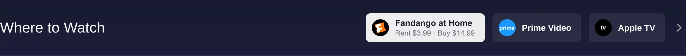
A pre-viewing decision context
Rotten Tomatoes is often used before watching a movie. So the page should prioritize evaluating a movie and finding a way to watch it.
Admit 1DiscoverWhat’s this?
Admit 2EvaluateIs it worth my time?
Admit 3ValidateDo others agree?
Admit 4WatchWhere can I see it?
Two rating systems define the product
The two scores answer different questions, so neither can stand in for the other. Both need to stay prominent.
472 reviews
91%
Tomatometer
Critics’ positive review percentage. Fresh at 60% and above.
Did critics approve?
50,000+ ratings
82%
Popcornmeter
Audience rating percentage. A rating of 3.5 stars or higher counts as positive.
Did audiences enjoy it?
The redesign needed to preserve the dual-perspective rating experience while making it easier to understand and act on.
Reel 3
Prioritizing the movie decision.
Every element on the page was ranked by how directly it helps someone decide. The layout moves from content-heavy to decision-oriented.
Billing order
StarringP0 Core movie information
Movie titleTomatometer and PopcornmeterGenre, runtime, release date, and ratingSynopsis
SupportingP1 Decision support
Critics ReviewsAudience ReviewsTrailerWhere to Watch
FeaturingP2 Engagement
WatchlistWrite a ReviewShare
WithP3 Discovery
Related MoviesWhat to WatchAdditional clips and videos
Where each element sits on the page
P0 CoreP1 Decision supportP3 Discovery
View as table
Element
Tier
Original (px)
Redesign (px)
Ratings
P0
706
228
Rent or stream action
P1
890
824
Where to Watch
P1
1,026
964
Full synopsis
P0
4,376
1,097
Critics Reviews
P1
1,649
1,320
Audience Reviews
P1
2,037
2,184
Cast & Crew
P3
2,615
3,173
Videos
P3
2,875
3,490
More Like This
P3
3,185
3,890
Top of each module in px, measured on the 1440-wide Figma frames of the original and the redesign.
Reel 4
Four decisions, from problem to outcome.
Scene 01
Put the movie decision first
OriginalRedesign
↔
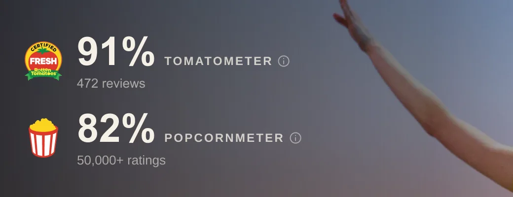
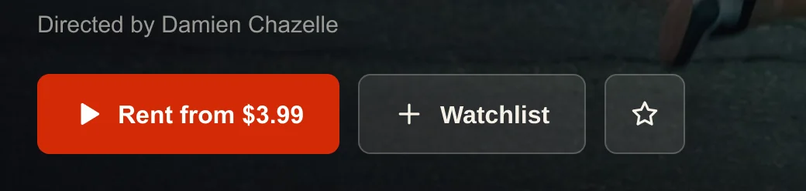
Problem
Title, scores and actions were split across the hero, a card below it and a sticky bar, while ads and a video rail held the first screen.
Insight
The first screen has to answer “is this worth my time?” even when it also carries an ad.
Design decision
Consolidate title, ratings, metadata and primary actions in one hero. Keep ratings visible when advertising is present, and keep the trailer as a cinematic element, with muted playback and visible controls.
Design outcome
In the same 1440×900 frame, both scores, the rental action and Watchlist now sit above the fold, beneath a 90px ad slot.
Exploring autoplay: whether muted playback helps or distracts is untested.
Ratings should do more than summarize reception. They should help users understand why a movie is worth considering.
Scene 02
Give Critics and Audience different voices
Outtakes
Cards
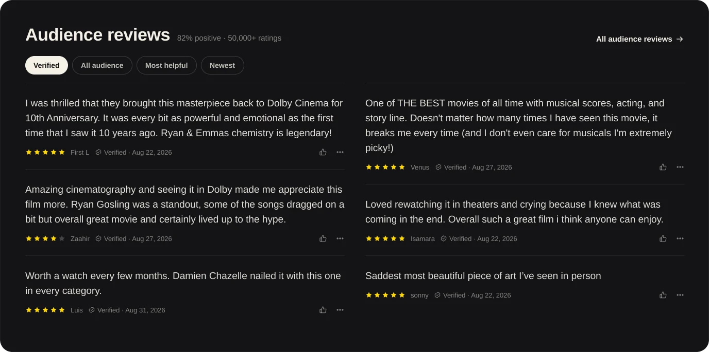
Side by side
Broadsheet
Pull quote
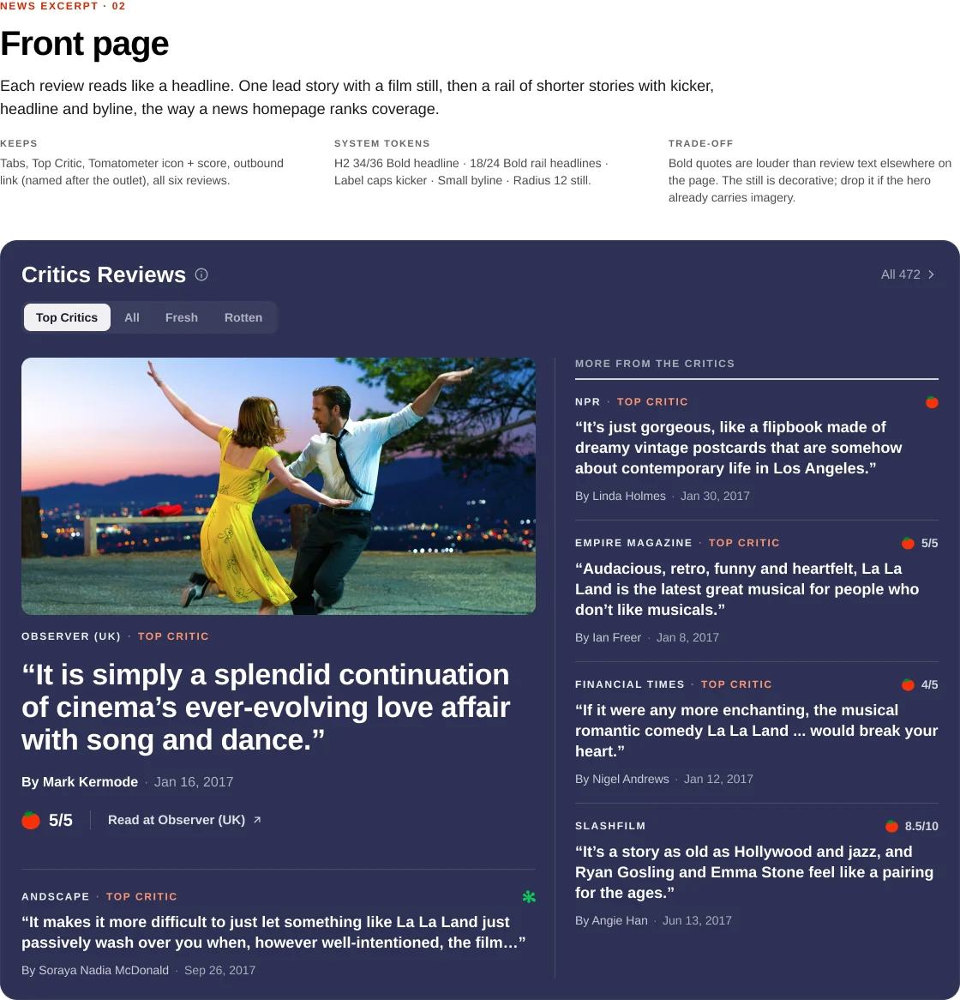
Front page
Wire
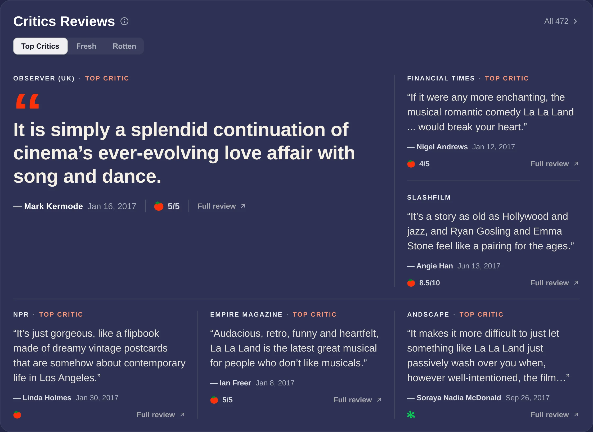
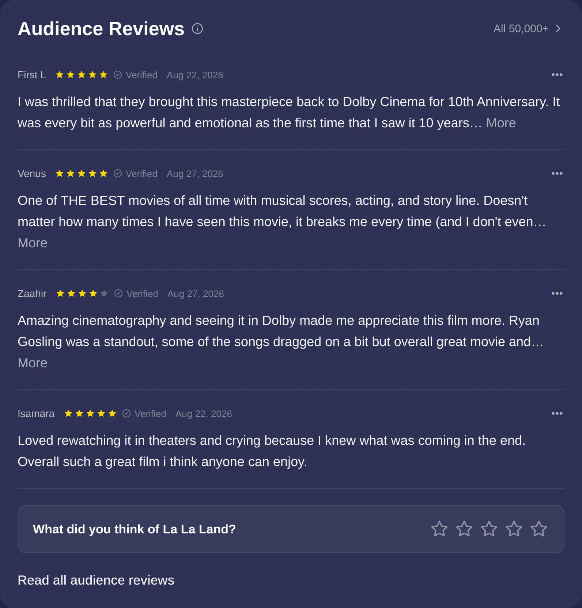
Critics Reviews
Newspaper-inspired editorial typography
Editorial credibility
Publication and critic identity
Original review excerpts
Critic ratings and links to full reviews
Audience Reviews
A streamlined, information-dense review feed
Quick scanning of multiple opinions
Star ratings and verification status
Review content prioritized over reviewer identity
Compact and readable list presentation
Problem
Both review types shared one carousel card. Above the fold, the two pinned audience reviews were the same off-topic joke, marked Verified.
Insight
Critics are read for authority, audiences for volume. Identical cards flatten that difference.
Design decision
Stack the two vertically and let each set its own rhythm, instead of forcing both into matching side-by-side cards.
Design outcome
Critics read like a newspaper page. Audience reads like a fast, dense feed.
Different sources deserve different reading experiences.
Scene 03
Make ratings more transparent
For Critics
Expanded Critics Reviews
Filters for Top Critics, Fresh, and Rotten
Publication identity and review excerpts
Access to full reviews
For Audience
Expanded Audience Reviews
Average rating
Star-rating distribution
Verified user reviews
Helpful feedback indicators
Problem
The fresh and rotten split and the average score were hidden behind an icon that didn’t look clickable. Reviews couldn’t be filtered on the page.
Insight
If people doubt a single percentage, the answer is to show the evidence behind it, not a bigger number.
Design decision
Open each review section into a drawer that keeps the page in place, with filters for critics and a rating breakdown for audiences.
Design outcome
Both scores can be inspected without leaving the movie page.
Star distribution and helpful counts are illustrative placeholders.
Make ratings more transparent, not just more prominent.
Scene 04
Make watching the natural next step
Problem
The main button said STREAM NOW but led to renting or buying on Fandango. Where to Watch held a single logo.
Insight
The moment someone decides to watch is also where user intent and commercial distribution meet.
Design decision
Name the real action and price in the hero, place Where to Watch directly beneath it, and keep the rental action in the sticky header once the hero scrolls away.
Design outcome
The button says what it actually does, and every provider sits directly beneath the hero.
Prices shown are placeholders.
Once users decide a movie is worth watching, finding where to watch it should be effortless.
Reel 5
A more focused movie experience.
The complete redesigned movie detail page, then a closer look at each part.
Now showing
Hero and ratings
Where to Watch
Movie overview
Critics Reviews
Audience Reviews
Cast and Crew
Related Movies and additional media
End credits
In detail
Hero and ratings
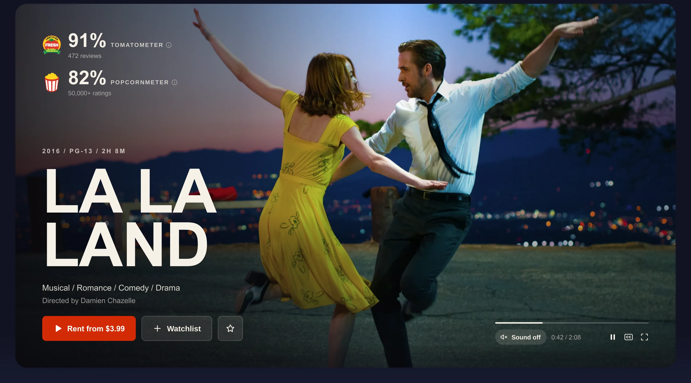
Movie overview
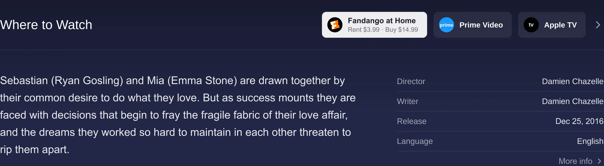
Critics Reviews
Audience Reviews
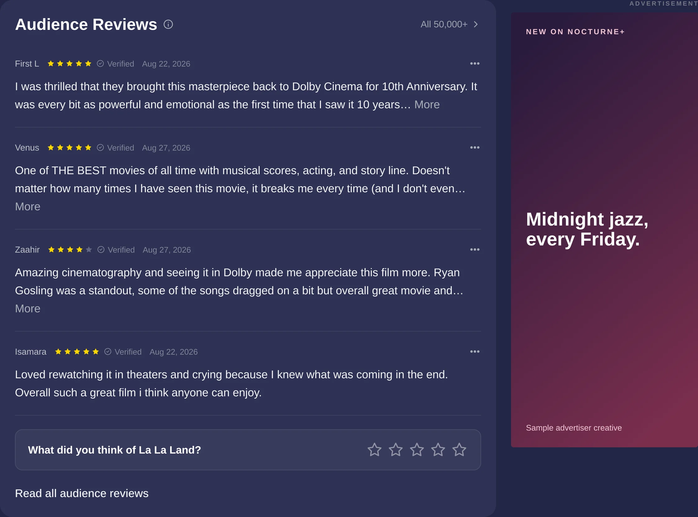
Cast and Crew
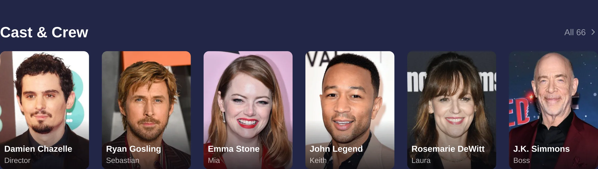
Related Movies and additional media
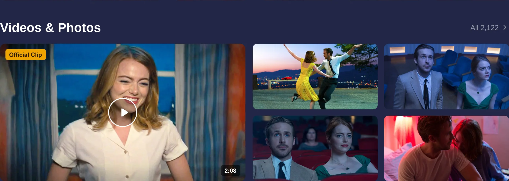
End credits
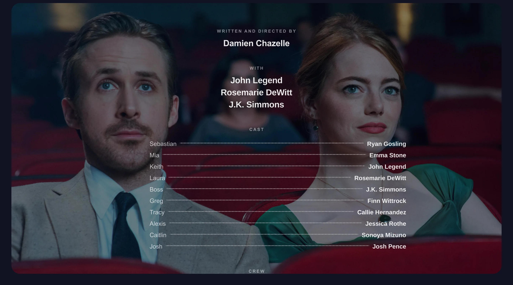
Interactions
Sticky navigation. Scores and the rental action stay reachable once the hero scrolls away.Critics Reviews, expanded. Filter by Top Critics, Fresh and Rotten.Audience Reviews, expanded. Average rating, distribution and verified reviews.Rent, then choose a provider. The action leads straight to Where to Watch.
Screen recordings of the working HTML prototype. Working HTML prototype built from an earlier iteration, so its hero differs from the final Figma frame. Open the prototype
Interface copy is real Rotten Tomatoes content captured in November 2026. Streaming prices, audience star values, helpful counts and ad creatives are placeholders.
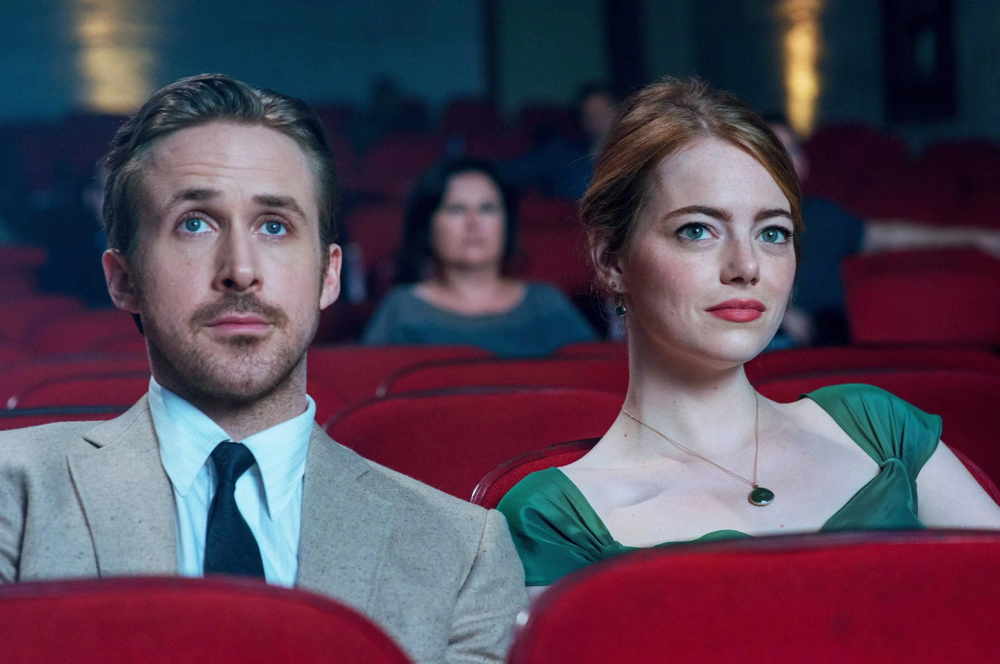
End credits
Bringing Rotten Tomatoes back to the decision that matters.
The redesign brings Rotten Tomatoes closer to its most important job: helping people make more informed movie decisions.
By prioritizing ratings, giving critics and audience reviews distinct reading experiences, and making the path to watching more direct, the experience becomes more focused while respecting the commercial realities of the platform.
What the redesign addresses
Scores and actions reach the first screen
Critics and audiences get their own reading experience
Both scores can be inspected in place
The path from deciding to watching is direct
What remains unvalidated
No usability testing has been run yet
Whether muted autoplay helps or distracts
Whether advertisers and partners accept the new placements
Whether moving ratings up changes what people decide
What could come next
Test the page with real moviegoers
Design the mobile experience in depth
Extend poster-derived color across the catalog
Connect live streaming prices and availability
Written, researched and designed by
Cynthia Lu
Made for
Product design take-home for Prelim
Featuring
La La Land, as the example film
Released
November 2026
Independent concept. Not affiliated with Rotten Tomatoes, Fandango or the film’s rights holders. Rotten Tomatoes marks, La La Land imagery and quoted reviews belong to their owners.